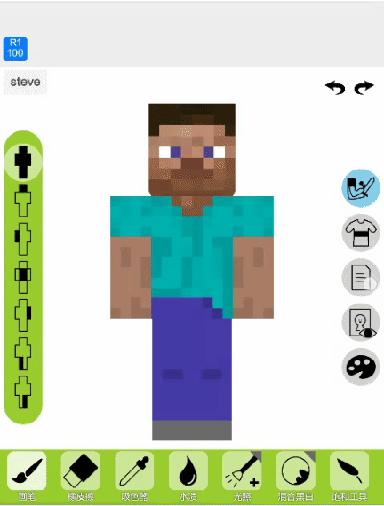
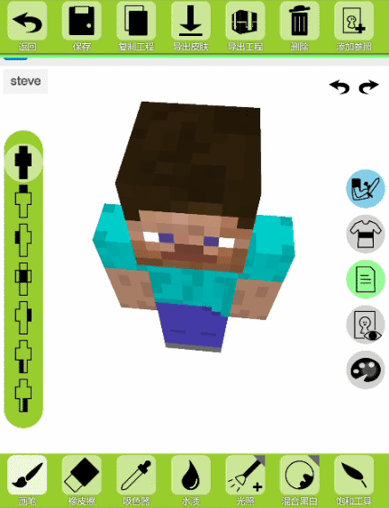
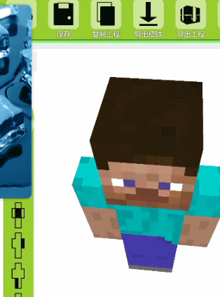
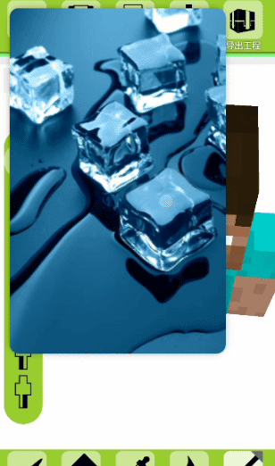
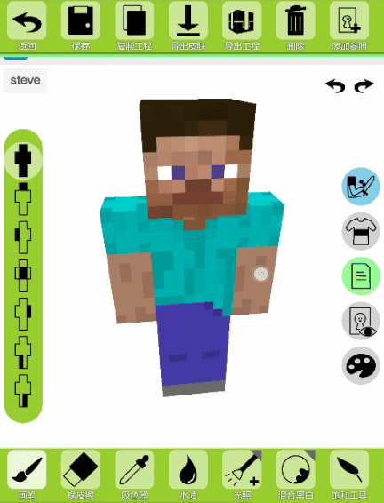
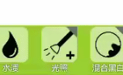
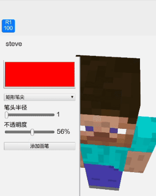
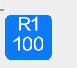

这是ShadowSkin2的新手教程。shadowskin2的ui简洁易懂，所以这里
只介绍手势操作。
编辑器页面在后续版本里还会继续更新，那教程总不能
更新一下换一次吧。那就凑合一下咯！
ShadowSkin是基于手机版的！pc端目前还没有做，不过PC端已经有Skin3d了，所以呢就用那个吧。如果你是ShadowSkin的忠实粉丝，那你也可以按F12打开
开发者模式，左上角有手机版模拟器。再次声明，PC端是完全无法使用的！
ShadowSkin使用GPL3.0许可，您的一切行为需要遵守GPL3.0的协议。如果您仅使用，可以忽略它。如果您需要转载，请注明作者，并且保持开源。所以还是
不要魔改了吧。保留所有权利。
右侧栏是显示用的。这边展示了三个隐藏的UI界面。（可能有点动画异常，后期会修复)  手指往UI弹出的地方往回拖能收回面板，但是参照图的不行。  手指往右下角拖能放大参照图。  点击参照图能取色。  手指滑动编辑面板的空白部位能拖动模型旋转查看。但不能平移和缩放。  右上角有三角形的是多模式工具。上划可切换模式。  画笔上划可以将画笔储存为模板画笔（上面一行），下划长距离则是删除。如果在模板画笔里面上划，将会移动到第一位。  看下面这张图 
那么，教程到这里就结束了。如果还有不懂
那我也没办法了QAQ